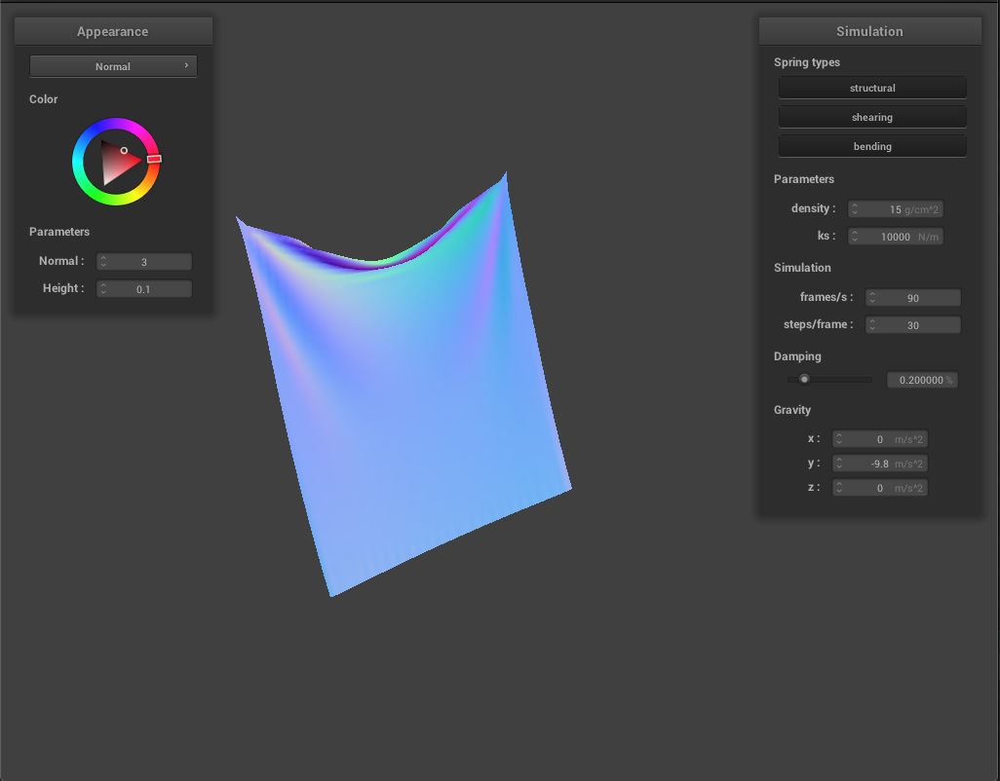
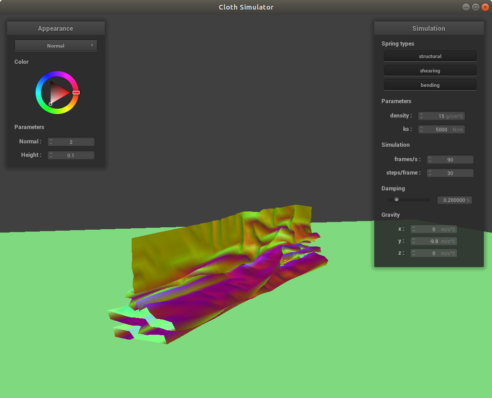
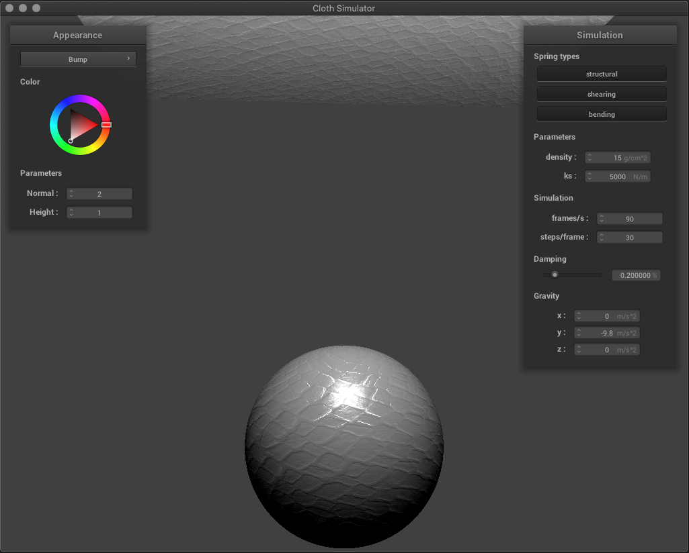

Overview
For this project I made a real-time cloth simulator that realistically simulates the movement of cloth. My simulator uses a point mass and spring system that defines the structure and behavior of the cloth by using springs with various physical constraints that connect between point masses to form a wireframe grid. I used Verlet integration to simulate the movement of cloth over time by computing each point mass's next position based on the point mass's current position, velocity, acceleration, applied forces. I also included the handling of collisions between the cloth and spheres and planes by testing for intersections and updating each point mass's position to lie on the surface of the other object. Additionally, I implemented real-time handling of self-collisions so the cloth can realistically fold onto itself by using spatial hashing to ensure fast search times for finding collisions between point masses. Lastly, I created a few GLSL shader programs in order to direct raytracing computations to the GPU rather than the CPU so that my cloth simulation could be interactive and in real-time. These customized shader programs include support for diffuse shading, Blinn-Phong shading, texture mapping, bump mapping, displacement mapping, and environment-mapped reflections. I really enjoyed this project since it combined a lot of the concepts taught in the coarse and built on them to create real-time interactive simulations. Working on this project gave me a deeper understanding of the rasterization pipeline from start to finish and in the end, I'm very proud of what I've accomplished!
Part 1: Masses and Springs
Structure of Point Masses and Springs
The cloth simulation model I used divides the cloth into evenly spaced point masses that are connected to each other by springs in order to provide realistic dynamic motion to the cloth in response to various forces from its environment. The "skeleton" of the cloth is a wireframe of point masses and springs shown below.
|
|
|
Wireframe Constraints
There are three different kinds of constraints, structural, shearing, and bending, that provide different kinds of links between the point masses to provided realistic movement and to retain structural integrity of the cloth during simulation. The images below show the structure of these constraints on the wireframe.
|
|
|
|
|
Part 2: Simulation via Numerical Integration
|
|
|
For this project, I implemented Verlet integration in order to compute the new point mass positions based on the forces acting on each point mass at each time step. Verlet integration is an explicit integrator that is fast and fairly accurate and combats instability by constraining the positions and velocities of particles after each time step. To compute new positions, I first compute the total external forces, such as gravity, to apply uniformly to each point mass on the cloth. I then apply the spring correction forces that apply the spring constraints described previously between two point masses using Hooke's Law. After computing the forces acting on each point mass for each time step, I compute the point masses next positions based on their current positions, velocity, and total acceleration from all forces at a given time step using Euler's method. I also add damping into the simulation to help simulate loss of energy due to friction, heat loss, etc. by slightly scaling down the current velocity. To keep the springs from getting deformed during each time step of the simulation, I included deformation constraints that correct two point masses' positions such that the spring's length is at most 10% greater than its rest length at the end of each time step. The cloth is now able to realistically fall down to a resting state.
Cloth Behavior Using Default Parameters: ks = 5000 N/m, density = 15 g/cm^2, damping = 0.2%

|
|
Effect of Lowering the Spring Constant: ks = 2500 N/m
Lowering the spring constant of the cloth makes its springs less rigid. We can see that this makes the cloth much more prone to wrinkling as it falls.
Effect of Increasing the Spring Constant: ks = 10000 N/m
Increasing the spring constant of the cloth makes the spring more rigid. We can see that this makes the cloth much less wrinkly compared to the previous images, showing mush less strain to the structure of the cloth.
|  |
Effect of Decreasing the Density: density = 7 g/cm^2
Decreasing the density of the cloth decreased the magnitude of downward forces being applied to the cloth and helped to maintain the original flat position of the cloth.
Effect of Increasing the Density: density = 23 g/cm^2
Increasing the density of the cloth made increased the magnitude the downward forces being applied to the cloth and made the cloth much more prone to wrinkling due to the increased strain on the springs.

|
|
Effect of Decreasing Damping: d = 0.103448%
Decreasing the damping preserved more energy within the system, causing the cloth to fall much faster.
Effect of Increasing Damping: d = 0.804598%
Increasing the damping made the system loose more energy due to friction, heat loss, etc. This caused the cloth to move incredibly slow. The pictures below had approximately the same time stamps as all the other previous images, but moved so much slower that it couldn't even get close to a final resting state.
Cloth with Four Pins
Part 3: Collisions With Other Objects
For this part, I added support for cloth collision with spheres and planes. This was implemented by determining if each point mass is inside primitive at a given time stamp. If so, I adjusted the point mass's position in such a way that it accounts for friction between the two objects and lays on top of the primitive's surface, rather than falling through it.
Collisions With Spheres With Varied Spring Constants
The images below show the results of the cloth colliding with a sphere at increasing spring constant values. With a lower spring constant, the cloth seems to lay flatter on the sphere and be very wrinkly. With the default spring constant, the cloth does not lay as flat on the sphere at its final resting state, since we can see that the wrinkles in the cloth begin much higher than in the previous image. With a high spring constant, the wrinkles in the cloth begin much higher up, with much wider folds due to the stiffness of the springs.
|
|
|
|
|
Collisions With Planes
The image below shows the cloth at its final resting state at various camera angles. For fun, I added my own custom texture to the primitives, which ended up looking pretty groovy!
Part 4: Self-Collisions
How you handle the cloth colliding with itself can potentially be very costly, resulting in implementations that run in O(n^2) time and destroying the possibility of having a real-time simulation. To be able to have a cloth be able to fold onto itself in real-time, I implemented spatial hashing. Spatial hashing builds a new hash table at each time step that divides the 3D space of the simulation into 3D box volumes, each represented by a unique floating point number. These floats provide a mapping of all the point-masses that are within each 3D box division. This hash table provides more efficient look up times for finding point masses that could potentially collide with each other. Depending on how you map a point mass's position to a float representing a specific 3D box volume, will change the way that the cloth uniquely folds onto itself. My implementation exhibits the behavior shown below.
Self-Collisions with Default Parameters
|  |
Self-Collisions with Density = 75 g/cm^2
Increasing the density of the cloth made the cloth fold much closer onto itself, resulting in tighter folds and a flatter resting state.
Self-Collisions with Spring Constant = 500000 N/m
Having a very high spring constant gave very interesting results. Immediately, the cloth became very wrinkled and started to compress while still in the air. It took the cloth much longer to fall to the ground, and never fully flattened or settled to a resting state. My reasoning for why this happened is having very stiff springs resulted in very powerful forces interacting between the point masses. This caused lots of energy to be exchanged within the cloth's structure, making the springs oscillate and continue to collide with each other. Eventually, the system would have settled, but it likely would have taken a very long time.
Part 5: Shaders
Shader programs are used at the beginning and end of the rasterization pipeline and can be used to configure your own lighting and texture effects at the per-pixel level. These isolated programs are written in OpenGL Shading Language (GLSL) and are executed in parallel by the GPU, which speeds up the overall graphics program, allowing for real-time interactive applications. There are two types of shader programs, the first are vertex shaders, which are executed at the beginning of the rasterization pipeline. OpenGL calls the vertex shader program for every vertex defined by the primitive currently being drawn. Each vertex provides its 4D position, color, normal, texture coordinate, lighting, etc. information that is needed to draw the primitive. The resulting primitive then goes through rasterization, which converts its vertex positions to their pixel representation, also known as fragments but with additional information such as depth. Fragment shaders are called for every pixel that needs to be modified. This is where we can perform various calculations for lighting, material effects, etc. in order to tell OpenGL the color a pixel should be drawn. For this project, I made shader programs for diffuse shading, Blinn-Phong shading, texture mapping, bump mapping, displacement mapping, and environment-mapped reflections.
The Blinn-Phong Shading Model
Blinn-Phong shading combines local calculations for the diffuse shading, specular highlights, and ambient lighting of a pixel to create realistic shading for smooth 3D surfaces. The image below shows my implementation of Blinn-Phong shading, inclusive of all lighting components.
Blinn-Phong: Diffuse Shading
Diffuse shading computes the shading of a point independent of the view direction, which alone gives the object a matte 3D appearance. The larger the diffuse coefficient, the higher the contrast for the shading. The image below shows Blinn-Phong Shading with only the diffuse component with a diffuse coefficient of one.
Blinn-Phong: Specular Highlights
Specular highlights compute the light reflected from a point dependent on view direction, where the closer the half vector is to the normal, the closer the reflection is to a perfect mirror. Specular shading creates the highlights that give surfaces a smooth glossy appearance. Additionally, the larger the specular coefficient, the brighter the highlight. The image below shows Blinn-Phong shading with only the specular component with a specular coefficient of one.
Blinn-Phong: Ambient Lighting
Ambient lighting is a constant that adds a constant color to account for disregarded illumination and to fill in black shadows. The image below shows Blinn-Phong shading with only the ambient component and an ambient coefficient of 0.01. As you can see, I chose to apply a constant black color.
Texture Mapping
To apply a texture map to a primitive, I sample from a texture map at the uv-coordinate associated with the instance's vertex position and assign the sampled color to the current pixel fragment. The image below shows my texture mapping shader with my own custom texture map at various times of the simulation and camera angles.

|
|
Bump Mapping
Bump mapping modifies the normal vectors of an object to give the fragment shader the illusion of bumps on an object. To compute the new normals given a height map, I simplify my computations by working with a vector in the object space and then transform it back into the model space by multiplying it by the tangent-bitangent-normal matrix. I computed local space normals by looking at how the height changes as I make small changes to u or v. The images below show bump mapping on a cloth as well as a sphere. I used my own custom texture map that has the appearance of chain mail to make it so the loops lof the chains ook like they stick out.
Displacement Mapping
For displacement mapping, we actually change the geometry of the cloth by modifying the positions of the vertices to be consistent with the height map and modify the normals in relation to the new geometry. The image below shows displacement mapping on a sphere using the same texture as bump mapping. We can see that displacement mapping creates actual bumps that stick out of the sphere, whereas bump mapping keeps the surface of the sphere smooth but adds lighting that creating the illusion of bumps.
Bump vs. Displacement Mapping with Varying Mesh Coarseness
We can change the coarseness of the mesh by changing the height and normal u-coordinate scaling parameters. Below the first two images have a scaling of 16 and the last two images have a scaling of 128. We can see that lower scaling parameters result in shallower bumps than higher scaling parameters. The difference between bump and displacement mapping is emphasized by changing the coarseness, as we can see a clear change in geometry of the sphere with displacement mapping compared to bump mapping even though the depth of the ridges appear to be the same.
|
|
|
|

|
|
Environment-Mapped Reflections
To give objects a mirror material, I used the camera's position and the fragment's position to compute the outgoing ray that then gets reflected across the surface normal to get the outgoing direction of the ray. I then approximated the incoming radiance for that outgoing direction by sampling from an environment map, which is a pre-computed mapping of the direction-to-radiance computations performed by Monte Carlo integration. This gives the effect that the mirrored object is enclosed in an infinitely large room with walls painted by our cube texture map. The images below show the cloth and sphere as mirrors inside St. Peter's Basilica at various times during the simulation with different camera angles. I think the images turned out really cool!